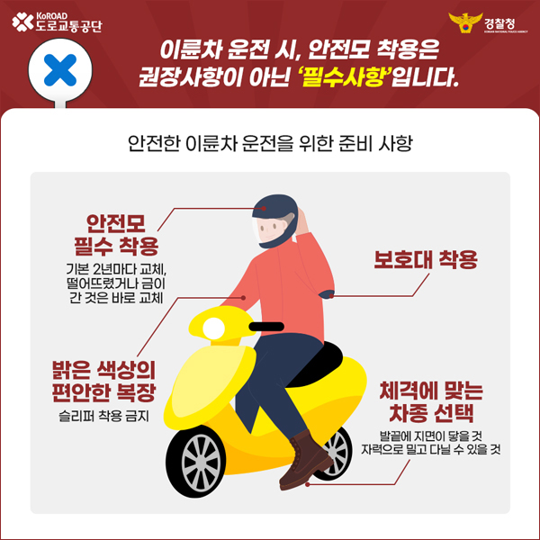

도로교통공단 소식
KoROAD NEWS
도로교통공단, 개정 도로교통법 시행규칙 안내
도로교통공단은 교차로에서 차량 적색 신호에 우회전할 때의 정지 의무를 명확히 한 개정 도로교통법 시행규칙이 1월 22일(일)부터 시행됨에 따라 운전자들의 각별한 주의를 당부했다. 최근 3년간(2019~2021년) 우회전 차량에 의한 교통사고는 총 56,730건이었으며, 이로인해 406명의 사망자가 발생했다. 1월 22일부터 시행된 개정 도로교통법 시행규칙에 따르면, 운전자는 전방 차량 신호등이 적색일 때 우회전하는 경우 정지선·횡단보도 및 교차로 직전에서 반드시 정지해야 한다. 이후 보행자가 없으면 신호에 따라 진행하는 다른 차마의 교통을 방해하지 않고 서행하여 우회전할 수 있다. 경찰청과 도로교통공단은 개정 도로교통법 시행규칙 시행 초기 발생할 수 있는 운전자들의 혼란을 최소화하는 것을 중점으로 두고, 올바른 우회전 방법을 안내하는 자료를 제작 및 배포했다.
| 구분 | 3년 합계 | 2019년 | 2020년 | 2021년 |
|---|---|---|---|---|
| 사고 건수(건) | 56,730 | 20,235 | 18,538 | 17,957 |
| 사망자 수(명) | 406 | 139 | 131 | 136 |
초보자들이 알아야 할 안전 수칙 OX퀴즈 형식 카드뉴스 제작
경찰청과 도로교통공단은 최근 3년간 이륜차 교통사고가 증가하고, 특히 운전 경력이 짧은 29세 이하 운전자의 사고 비율이 비교적 높게 나타남에 따라, 이륜차 초보자들이 반드시 알아야 할 안전수칙을 정리한 카드뉴스 자료를 제작·배포했다.

도로교통공단은 국민권익위원회의 2022년 공공기관 종합청렴도 평가에서 전년 대비 한 단계 상승한 2등급(우수)을 달성했다고 밝혔다.
2022년 개편된 종합청렴도 평가에서는 기관 업무를 경험한 국민과 내부 직원 등 이해관계자 설문조사(청렴체감도), 기관별 반부패 개선노력(청렴노력도), 객관적인 부패사건 발생현황(부패실태)를 모두 반영해 기관별 종합청렴도 등급을 산정·발표했다.
도로교통공단은 이번 평가에서 반부패 청렴 인프라 강화와 직원 및 고객과의 소통을 통한 청렴제도의 내재화 노력 등을 인정받았다. 특히 △ISO37001 인증 △찾아가는 관리자 청렴교육 실시 △본부 및 지방조직이 함께하는 1조직 1청렴 과제 추진 △외부 이해관계자들과의 청렴 소통 간담회 실시 △ESG경영선포식 등 청렴 시책을 체계적으로 추진해 높은 평가를 받았다.
이주민 도로교통공단 이사장은 “전 임직원의 노력으로 전년 대비 한 단계 상승한 2등급 달성이라는 값진 성과를 거둬 매우 기쁘게 생각한다”라며 “앞으로도 도로교통공단은 국민에게 신뢰받는 청렴 우수기관이 되기 위해 더욱 노력하겠다”고 말했다.
도로교통공단은 지난 10일 울산시 소재 도로교통공단 운전면허본부에서 가수 전유진 씨를 ‘교통사고 예방 홍보대사’로 위촉했다고 밝혔다. 전씨는 도로교통공단이 도로 위 운전자와 보행자 간 배려하는 교통문화 정착을 위해 추진하고 있는 ‘횡단보도 손짓 캠페인’의 트로트 버전 캠페인송 참여를 비롯해, 교통사고 예방을 위한 도로교통공단 SNS 이벤트 등에 재능기부로 참여한다.
위촉식에서 전씨는 “도로교통공단과 함께 국민의 교통안전에 보탬이 되는 활동을 하게 되어 영광스럽게 생각한다”며, “교통사고 예방 홍보대사로서 교통안전 메시지를 전달하는 데 최선을 다하겠다”라고 소감을 밝혔다.

전씨는 2019년 KBS ‘노래가 좋아: 트로트가 좋아 특집’ 프로그램에 출연해 ‘용두산 엘리지’를 불러 트로트 신동으로 이름을 알렸다. 이후 싱글 앨범 발매를 비롯해 TV조선 ‘내일의 미스트롯2’, ‘화요일은 밤이 좋아’ 등 여러 프로그램에 출연하며 대중에게 인지도를 높여가고 있다.
도로교통공단이 운영하는 TBN한국교통방송이 2023년을 맞아 ‘새롭게 도약하는 TBN’으로 거듭나기 위해 라디오 청취 행태를 반영한 신년 개편을 단행한다.
지난 20일 개국 25주년을 맞은 TBN은 이번 개편으로 오는 1월 2일(월)부터 신규 프로그램 ‘12시에 만나요’를 평일(월~금) 오후 12~14시에 방송한다.
‘12시에 만나요’는 코미디언 양상국과 김효진이 진행을 맡아, 전국 청취자들이 TBN의 장점으로 꼽은 ‘친근함’과 ‘유익함’을 담은 내용으로 프로그램을 구성해 전국의 청취자들에게 웃음과 즐거움을 선사할 계획이다.
‘12시에 만나요’는 지역의 다양한 소식과 정보 등을 청취자에게 전하며, 코미디언 조문식과 함께 전국 방방곡곡 전통시장의 먹을거리와 명물을 소개하는 <시장구경 갑시다!>와 김유진 푸드 칼럼니스트의 <어디까지 먹어봤니?>, <우리끼리 대나무 숲>시리즈 등 요일별 세부 코너를 선보일 예정이다.
또한 TBN은 라디오방송 최초로 방송 편성·제작 전반에 걸쳐 청취자의 목소리를 적극적으로 반영하기 위한 옴부즈맨 프로그램을 신설해 청취자와의 소통도 강화한다.
도로교통공단은 2020년부터 정부의 공공·민간 클라우드 전환 정책을 적극적으로 이행하여, 클라우드 관련 소프트웨어 산업 활성화에 공헌한 공로를 인정받아 행정안전부장관이 수여하는 ‘2022년 공공부문 클라우드 전환 활성화 유공 장관 표창’을 수상했다.
도로교통공단은 정부의 ‘행정·공공기관 정보자원 클라우드 전환·통합 추진계획’에 따라 33개 정보시스템을 클라우드로 전환할 계획이다.
지난해 공공·민간 클라우드 전환을 위한 컨설팅을 통해 실행 가능한 로드맵을 수립하는 등 시행착오 최소화 방안을 마련했으며, 올해는 도로교통공단 누리집, 전자메일, 전자도서실 등 6개 정보시스템을 민간 클라우드로 전환을 완료했다. 또한, 정보시스템의 민간 클라우드 전환 경험을 바탕으로 3개 정보시스템에 대한 민간 클라우드 전환을 추진 중이다.
한편, 도로교통공단은 클라우드 전환의 선제적 이행에 따른 노하우를 인정받아 지난 11월 ‘원주시 클라우드 산업 협의회’에 위촉되어 강원권역 클라우드 산업 활성화를 위해 자문활동을 수행하고 있다.